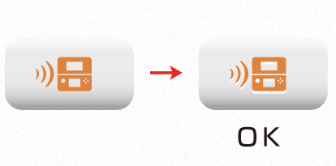

| Somewhat real A | Somewhat real B |
|---|---|
| Simple A | Simple B |
|---|---|
| Small simple A | Small simple B |
|---|---|
3. Using Data Provided by Nintendo
The data is stored in $CTR_SDK/resources/icon/DlplayIcon.
Both a Photoshop format (PSD) and Illustrator format (AI) have been prepared. Convert to TGA as needed and use.
4. Notes Regarding the Modification and Use of the Data
Modifications
The images cannot be modified. Do not add elements or alter the design.
Also be careful not to alter the aspect ratio when positioning the icons.
Specifying the color
The basic color is orange (R,G,B =230, 135, 60). You can make fine adjustments to get softer coloration.
In addition to orange, you can also use white, black, and gray. Do not use any other colors besides these.
Use of a background mask
There is no problem with adding a mask to the icon background for the purpose of increasing icon visibility.
There is no specification for the mask size, but be sure to fill the inside of the mask.

Embossing
There is no problem with using embossing for the purpose of increasing icon visibility.

But contact Nintendo if this makes the image different significantly.
5. Revision History
- 2012/04/26
- Initial version.